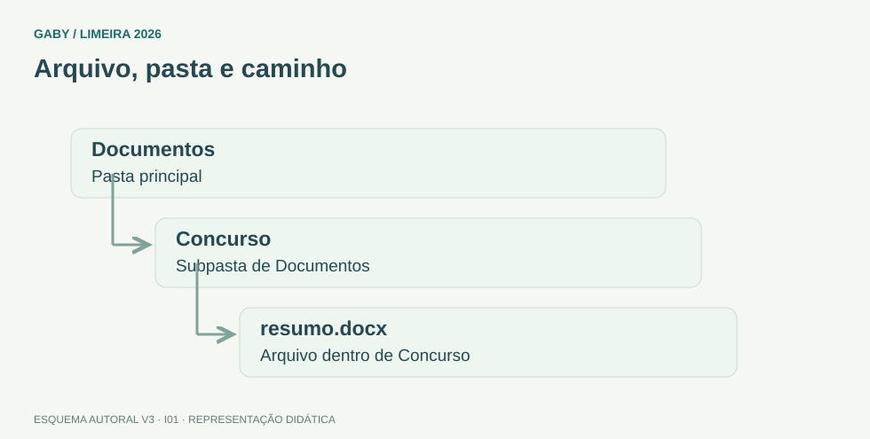

Objetivos do módulo
- Distinguir arquivo, pasta, diretório, unidade e caminho.
- Entender copiar, mover, renomear, excluir e restaurar.
- Reconhecer extensões e associações de arquivos.
- Usar o Explorador de Arquivos do Windows 11: Acesso rápido, modos de exibição, itens ocultos e menu de contexto.
- Aplicar as regras de nomes e de caminhos, inclusive o caminho de rede (UNC).
- Explicar o que a indexação de pesquisa e a pasta compactada (ZIP) fazem e o que não fazem.
- Diferenciar compartilhamento em rede local, unidade de rede mapeada e sincronização com o OneDrive.
- Reconhecer a função do comando
cdno Prompt de Comando.
Arquivo, pasta e caminho

Descrição em texto do esquema
- Documentos: Pasta principal
- Concurso: Subpasta de Documentos
- resumo.docx: Arquivo dentro de Concurso
Oficina visual · aplique o esquema
No caminho C:\Estudos\Limeira\resumo.docx, identifique unidade, pastas, nome e extensão.
Atividade autoral complementar da V3. Registre sua resposta; a resolução está no arquivo de gabarito e revisão.
Mapa do conteúdo
- 1. Arquivo, pasta e caminho
- 2. Extensões
- 3. Copiar x mover
- 4. Exclusão e Lixeira
- 5. Propriedades e pesquisa
- 6. Explorador de Arquivos: navegação e exibição
- 7. Regras de nomes e caminhos
- 8. Indexação de pesquisa
- 9. Pastas compactadas (ZIP)
- 10. Rede local: compartilhar pasta e mapear unidade
- 11. OneDrive e Arquivos Sob Demanda
- 12. Acesso de aplicativos às bibliotecas
- 13. Prompt de Comando: o comando cd
1. Arquivo, pasta e caminho
Referência desta aula: Windows 11 em português do Brasil, com o Explorador de Arquivos e o OneDrive integrado.
Arquivo é uma unidade de informação gravada, normalmente identificada por nome e extensão. Pasta ou diretório é um contêiner lógico que organiza arquivos e outras pastas. Caminho descreve a localização, por exemplo C:\Usuários\Gaby\Documentos\prova.pdf.
A raiz de uma unidade é seu nível superior. Pastas podem conter subpastas em estrutura hierárquica.
Uma pasta guarda arquivos de qualquer tipo ao mesmo tempo (textos, imagens, vídeos, programas) e também outras pastas. Ela não executa nada e não é um arquivo de texto: é só o lugar onde os itens ficam organizados.
Explorador de Arquivos
O Explorador de Arquivos é o gerenciador de arquivos e pastas que já vem no Windows. Nele você navega pelas unidades e cria, abre, copia, move, renomeia e exclui itens. Para abri-lo, clique no ícone da barra de tarefas ou do menu Iniciar, ou pressione a tecla do logotipo do Windows + E.
Pastas pessoais do usuário
Cada conta de usuário tem um perfil, que fica em C:\Usuários\nome-do-usuário. Ao criar o perfil, o Windows já cria dentro dele as pastas pessoais: Área de Trabalho, Documentos, Downloads, Imagens, Músicas e Vídeos. Elas existem desde o primeiro acesso; não dependem de instalar programas nem de salvar um arquivo antes.
- Documentos é o destino sugerido por muitos programas para textos e materiais parecidos.
- A Área de Trabalho também é uma pasta do usuário e aceita arquivos.
- O destino sugerido é só uma sugestão: na janela Salvar como você pode escolher outra pasta.
- No Windows 11, essas pastas aparecem fixadas no Acesso rápido do Explorador.
2. Extensões
No nome ata.docx, o ponto separa o nome principal (ata) da extensão (docx). A extensão vem sempre depois do ponto, no fim do nome, e indica o formato do arquivo.
A extensão é opcional: o Windows aceita um arquivo sem extensão. Também não há tamanho fixo: existem extensões de duas, três, quatro ou mais letras (.js, .pdf, .docx). Mesmo opcional, ela é útil, porque é por ela que o Windows escolhe o programa que abre o arquivo.
| Extensão | Tipo típico |
|---|---|
| .docx | Documento do Word |
| .xlsx | Pasta de trabalho do Excel |
| .pptx | Apresentação do PowerPoint |
| Documento em formato PDF | |
| .zip | Arquivo compactado |
| .jpg/.png | Imagem |
O que a extensão diz e o que não diz
- Ela ajuda a identificar o formato e os aplicativos compatíveis.
- Ela não garante que o arquivo seja seguro, não informa quem o criou e não transforma um documento em programa.
- Trocar a extensão pelo comando Renomear não converte o conteúdo; o arquivo pode até deixar de abrir.
Ver as extensões no Explorador
O Explorador pode esconder a extensão e mostrar só o nome principal. Para vê-la, use Exibir > Mostrar > Extensões de nomes de arquivos. Assim dá para distinguir, por exemplo, lista.pdf de lista.exe. Ver a extensão ajuda a reconhecer o tipo, mas não prova que o arquivo é seguro.
Aplicativo padrão
Aplicativo padrão é o programa que o Windows usa para abrir um tipo de arquivo quando você dá dois cliques nele. Para trocá-lo, abra Configurações > Aplicativos > Aplicativos padrão, digite a extensão (por exemplo, .txt) e escolha o aplicativo.
Essa troca muda só a associação. Os arquivos continuam idênticos: não são convertidos nem renomeados, e não é preciso desinstalar o programa anterior.
Miniatura não é editor
O Explorador pode mostrar uma miniatura (uma imagem reduzida do conteúdo) ou uma prévia no painel de visualização (Alt+P). Isso só mostra o arquivo. Não garante que exista no computador um programa capaz de editar aquele formato.
3. Copiar x mover
Copiar cria uma segunda instância dos dados no destino, preservando a origem. Mover altera a localização lógica. Arrastar entre pastas da mesma unidade costuma mover por padrão; entre unidades diferentes, costuma copiar — mas prova pode focar nos comandos explícitos, que são menos ambíguos.
4. Exclusão e Lixeira
A exclusão comum de arquivo local geralmente envia para a Lixeira, de onde pode ser restaurado enquanto não removido definitivamente. Shift+Delete costuma excluir sem enviar à Lixeira. Em mídias e contextos específicos o comportamento pode variar.
Arquivo em uso
Um arquivo que está aberto em um programa fica em uso, e o Windows pode recusar a exclusão (assim como mover ou renomear) até que ele seja fechado. A solução é fechar o arquivo no programa e repetir o comando. O tamanho do arquivo, o comprimento do nome e a data de criação não impedem a exclusão.
5. Propriedades e pesquisa
Propriedades exibem tipo, tamanho, datas, local e atributos. O Explorador de Arquivos oferece busca, ordenação e modos de exibição. É importante diferenciar nome, extensão e caminho completo.
Para abrir as Propriedades de um item selecionado, use o botão direito > Propriedades ou Alt+Enter. A pesquisa do Explorador fica na caixa do canto superior direito da janela (Ctrl+F leva o cursor até ela) e procura a partir da pasta aberta. O que torna essa pesquisa rápida é a indexação, explicada na seção 8.
6. Explorador de Arquivos: navegação e exibição
Início, Este Computador e Acesso rápido
- Início: página que o Explorador abre por padrão. Mostra o Acesso rápido, os favoritos e os arquivos recentes.
- Este Computador: mostra as unidades do computador (como C:) e os locais de rede.
- Acesso rápido: lista de pastas fixadas, para chegar a elas com um clique.
Para fixar uma pasta, clique nela com o botão direito e escolha Fixar no Acesso rápido. Para tirar da lista, botão direito > Desafixar do Acesso rápido.
Fixar cria apenas um acesso. A pasta continua no mesmo lugar: não é movida, não é copiada e não vira backup. Desafixar também não apaga nada; a pasta segue abrindo pelo caminho original.
Em qual página o Explorador abre
Quem prefere que o Explorador abra direto nas unidades muda isso nas opções: no botão Ver mais (os três pontos da barra de comandos) > Opções, na lista Abrir Explorador de Arquivos para, escolha Este Computador no lugar de Início e confirme em Aplicar. Fixar uma pasta, mudar o tamanho dos ícones ou renomear o atalho do Explorador não altera a página de abertura.
Modos de exibição
O menu Exibir muda a forma de listar os itens: ícones de vários tamanhos, Lista, Detalhes, entre outros. O modo Detalhes mostra um item por linha, com colunas de propriedades como Nome, Data de modificação, Tipo e Tamanho. É o modo indicado para comparar vários arquivos; clicar no título de uma coluna ordena a lista por ela. Os modos de ícones mostram o conteúdo em miniaturas, sem colunas.
Exibir > Mostrar
| Opção | O que faz |
|---|---|
| Extensões de nomes de arquivos | Mostra a extensão junto do nome (ata.docx em vez de ata). |
| Itens ocultos | Mostra arquivos e pastas marcados com o atributo Oculto. |
Oculto é um atributo marcado nas Propriedades do arquivo ou da pasta. O item oculto continua no disco, inteiro. Ele apenas deixa de aparecer enquanto Itens ocultos estiver desativado. Ocultar não exclui, não envia à Lixeira, não criptografa e não muda as permissões de acesso.
Menu de contexto
O botão direito do mouse abre o menu de contexto. No Windows 11 ele é simplificado: no topo ficam os ícones de Recortar, Copiar, Colar, Renomear, Compartilhar e Excluir. Comandos antigos, inclusive os acrescentados por programas instalados, podem não aparecer ali. Para vê-los, escolha Mostrar mais opções (Shift+F10), que abre o menu tradicional completo. Atualizar a janela com F5 ou trocar o modo de exibição não muda os comandos do menu.
Atalhos úteis no Explorador
| Atalho | Efeito |
|---|---|
| Tecla do logotipo do Windows + E | Abre o Explorador de Arquivos. |
| F2 | Renomeia o item selecionado. |
| Ctrl+Shift+N | Cria uma nova pasta. |
| Delete | Exclui o item selecionado e o envia à Lixeira. |
| Shift+Delete | Exclui o item selecionado sem enviá-lo à Lixeira. |
| Alt+Enter | Mostra as propriedades do item selecionado. |
| Shift+F10 | Exibe o menu de contexto do item selecionado. |
| Alt+Seta para cima | Sobe um nível no caminho da pasta. |
| F5 | Atualiza a janela. |
7. Regras de nomes e caminhos
Caracteres reservados
O nome de um arquivo ou de uma pasta não pode conter estes nove caracteres reservados, porque o Windows os usa com outra função:
| Caractere | Nome |
|---|---|
\ | barra invertida |
/ | barra |
: | dois-pontos |
* | asterisco |
? | ponto de interrogação |
" | aspas duplas |
< | menor que |
> | maior que |
| | barra vertical |
A barra invertida é o separador dos componentes do caminho: fica entre a unidade, cada pasta e o arquivo. Por isso ela nunca faz parte do nome de um único arquivo ou de uma única pasta. Em D:\Editais\2026\anexo.pdf, o Windows lê quatro componentes: a unidade D:, a pasta Editais, a subpasta 2026 e o arquivo anexo.pdf.
Outras regras do Windows:
- O nome não deve terminar com espaço nem com ponto.
- Alguns nomes são reservados pelo sistema e não servem para arquivos, como CON, PRN, AUX e NUL.
- O ponto, o hífen, o sublinhado e o espaço no meio do nome são permitidos.
Maiúsculas e minúsculas
Não presuma que o Windows diferencia maiúsculas de minúsculas em nomes. No comportamento padrão, ATA.docx, Ata.docx e ata.docx são tratados como o mesmo nome; na mesma pasta, o segundo entraria em conflito com o primeiro. A letra da unidade também não diferencia: D:\ e d:\ são a mesma unidade. A orientação da Microsoft é não contar com essa diferenciação, embora alguns sistemas de arquivos possam fazê-la em configurações especiais.
Caminho local, caminho de rede (UNC) e caminho relativo
| Forma | Exemplo | Como reconhecer |
|---|---|---|
| Caminho local completo | C:\Atas\maio.docx | Começa pela letra da unidade, dois-pontos e barra invertida. |
| Caminho UNC (rede) | \\servidor\rh\ferias.xlsx | Começa com duas barras invertidas, seguidas do nome do computador servidor e do nome do compartilhamento. |
| Caminho relativo | ..\modelos\oficio.docx | Parte da pasta atual; .. indica a pasta acima (pasta pai) e . indica a própria pasta atual. |
No exemplo UNC, servidor é o computador que oferece os arquivos, rh é a pasta compartilhada e ferias.xlsx é o arquivo. Um caminho UNC não tem letra de unidade, mas não é um endereço de Internet: uma URL começa por um protocolo, como https://, e usa a barra comum.
8. Indexação de pesquisa
O que é
Indexação é o processo em que o Windows examina os arquivos e cataloga suas informações em um índice. Entram no índice as propriedades (metadados) de cada arquivo, como nome, caminho completo e datas, e, nos arquivos com texto, também as palavras do conteúdo. Funciona como o índice de um livro: na hora da busca, o Windows consulta o índice em vez de varrer o disco inteiro, e o resultado sai muito mais rápido.
Como as propriedades são catalogadas, dá para achar um arquivo por um metadado, como a data de criação, mesmo sem lembrar o nome.
Quais locais são indexados
A configuração fica em Configurações > Privacidade e segurança, na página de pesquisa do Windows, em Localizar meus arquivos. Há dois modos:
| Modo | O que indexa |
|---|---|
| Clássico | Por padrão, as pastas Documentos, Imagens e Música e a área de trabalho. Outras pastas precisam ser incluídas. |
| Avançado | Todo o computador, incluindo todas as pastas e arquivos do usuário. Dá resultados mais completos e pode usar mais recursos. |
No modo Clássico, para incluir uma pasta que ficou de fora, selecione Personalizar os locais de pesquisa. Abre-se a janela Opções de Indexação; nela, o botão Modificar mostra os locais indexados e permite marcar a pasta desejada. Fixar a pasta no Acesso rápido não a inclui no índice.
Quando o índice é atualizado
- A primeira indexação pode demorar (a Microsoft fala em até duas horas).
- Depois, a indexação roda em segundo plano enquanto o computador é usado. O Windows acompanha as mudanças e reindexa só os dados que foram alterados; não reconstrói tudo a cada arquivo modificado.
- Enquanto a indexação de um lote grande de arquivos está em andamento, a busca pode vir incompleta. Um arquivo que ainda não aparece no resultado não foi apagado: só não foi catalogado.
9. Pastas compactadas (ZIP)
Uma pasta compactada é um arquivo de extensão .zip que reúne vários itens em um só e, em geral, ocupa menos espaço que os originais. É útil para enviar um conjunto de arquivos de uma vez.
No Explorador, a pasta compactada se comporta de modo parecido com uma pasta comum: você abre, vê a lista de itens e copia itens para dentro ou para fora. Ela aceita arquivos de tipos diferentes juntos (textos, planilhas, imagens). Compactar não converte os arquivos para outro formato nem os corrompe.
| Tarefa | Como fazer |
|---|---|
| Criar um ZIP | Botão direito no arquivo ou na pasta > Mostrar mais opções > Enviar para > Pasta compactada. É criada uma nova pasta compactada, com o mesmo nome, no mesmo local. |
| Acrescentar itens a um ZIP que já existe | Arraste os arquivos para cima da pasta compactada. Não é preciso recriar o pacote. |
| Extrair tudo | Botão direito na pasta compactada > Extrair tudo, escolha a pasta de destino e confirme. |
| Extrair um único item | Abra a pasta compactada e arraste (ou copie) só aquele item para uma pasta comum. |
Limites da compactação
- Compactar não é proteger. Um ZIP comum não tem senha nem criptografia: quem recebe o arquivo abre e copia tudo. Sigilo depende de criptografia e de controle de quem tem acesso.
- ZIP criptografado. O Windows 11 (versão 24H2) trabalha com ZIP, RAR, 7z e TAR, mas não faz operações em arquivos compactados criptografados. Para criá-los ou abri-los, a Microsoft orienta usar um aplicativo próprio para isso.
- Arquivos que já são comprimidos. Fotos JPEG já são gravadas com compressão. Reunidas em um ZIP, o tamanho total fica quase igual ao das fotos originais. O ZIP continua servindo para agrupá-las.
- A redução não tem valor fixo: depende do tipo de conteúdo.
10. Rede local: compartilhar pasta e mapear unidade
Compartilhar uma pasta na rede local
Compartilhar pela rede local permite que outros computadores da mesma rede (do mesmo prédio ou setor, por exemplo) acessem uma pasta do seu computador.
- Clique com o botão direito na pasta e escolha Mostrar mais opções.
- Aponte para Conceder acesso a e escolha Pessoas específicas.
- Selecione os usuários que poderão acessar e confira a lista antes de confirmar.
Na lista de usuários também existe Todos, que libera a pasta a todos os usuários da rede. Para restringir, escolha os usuários um a um. Esconder o caminho da pasta não restringe nada: quem decide o acesso é a permissão.
Para deixar de compartilhar: botão direito > Mostrar mais opções > Conceder acesso a > Remover acesso.
Rede local não é Internet. O compartilhamento descrito aqui vale para os computadores da mesma rede local e cria um caminho de rede (UNC), como \\recepcao\modelos. Ele não publica a pasta em um site nem cria endereço público. Para enviar arquivos a pessoas pela Internet, a Microsoft indica o OneDrive.
Mapear unidade de rede
Mapear unidade de rede associa uma letra de unidade (por exemplo, Z:) a uma pasta compartilhada. A pasta passa a aparecer em Este Computador como se fosse uma unidade, sem que seja preciso digitar o caminho de rede a cada vez.
- No Explorador, selecione Este Computador.
- No botão Ver mais (os três pontos), escolha Mapear unidade de rede.
- Em Unidade, escolha uma letra disponível.
- Em Pasta, digite o caminho do compartilhamento, como
\\servidor\rh, ou use Procurar. - Marque Reconectar-se na entrada se quiser que o Windows refaça a conexão toda vez que você entrar no computador. Conclua.
O que o mapeamento não faz:
- Não copia os arquivos para o seu computador. Eles continuam no servidor; a letra é só um caminho mais curto. Não é backup nem cópia offline.
- Não dispensa permissões. Só abre quem tem autorização no compartilhamento.
- Não funciona com o servidor desligado ou fora da rede, mesmo com Reconectar-se na entrada marcado.
Se a unidade mapeada não abrir, não conclua que os arquivos foram apagados. Verifique primeiro se o computador servidor está ligado e se você tem as permissões necessárias.
Fixar a pasta de rede no Acesso rápido ou criar um atalho facilita a navegação, mas não atribui letra de unidade.
11. OneDrive e Arquivos Sob Demanda
O OneDrive é o armazenamento em nuvem da Microsoft e aparece como uma pasta no Explorador de Arquivos. O que está nessa pasta é sincronizado: a mesma versão fica na nuvem e nos outros dispositivos ligados à mesma conta.
Conta e sincronização
A sincronização só funciona depois de entrar no OneDrive com uma conta da Microsoft: pessoal, corporativa ou de estudante. Sem conta configurada, a pasta não sincroniza com nada.
Sincronização não é backup. Tudo o que você faz na pasta se repete na nuvem: adicionar, alterar e também excluir. Excluir um arquivo na pasta sincronizada propaga a exclusão ao OneDrive e aos outros dispositivos. O item excluído vai para a lixeira do OneDrive, de onde pode ser restaurado por prazo limitado: 30 dias na conta pessoal e 93 dias na conta corporativa ou de estudante.
Arquivos Sob Demanda
Com o recurso Arquivos Sob Demanda, todos os arquivos do OneDrive aparecem no Explorador, mas só ocupam espaço no disco os que foram baixados. A coluna Status mostra a situação de cada um:
| Ícone | Estado | O que significa |
|---|---|---|
| Nuvem azul | Somente online | O arquivo está só na nuvem e não ocupa espaço no computador. Para abrir, é preciso Internet. |
| Marca de seleção verde | Disponível localmente | O arquivo foi aberto e baixado; abre sem Internet. Pode voltar a ser somente online. |
| Círculo verde com marca de seleção branca | Sempre disponível | Marcado com Sempre manter neste dispositivo; fica sempre no disco e abre sem Internet. |
Um arquivo somente online aparece na lista com nome e propriedades, mas seu conteúdo não está no computador. Duas consequências:
- A pesquisa do computador encontra o arquivo pelo nome, mas não pesquisa dentro do conteúdo dele.
- Para usar o arquivo sem Internet, é preciso baixá-lo antes, enquanto há conexão, e conferir se o ícone mudou. Ver o nome na lista não basta.
Dois comandos do botão direito
| Comando | Efeito |
|---|---|
| Sempre manter neste dispositivo | Baixa o item e o mantém no disco. Vale para um arquivo ou para uma pasta. |
| Liberar espaço | Remove a cópia local e deixa o item somente online. O arquivo continua na nuvem. |
- Marcar uma pasta com Sempre manter neste dispositivo vale também para o futuro: os arquivos novos que entrarem nela são baixados e ficam sempre disponíveis.
- Dá para marcar um único arquivo dentro de uma pasta somente online. Não é preciso baixar a pasta toda.
- Liberar espaço não exclui o arquivo do OneDrive. Só devolve espaço ao disco do computador.
12. Acesso de aplicativos às bibliotecas
As bibliotecas Documentos, Imagens e Vídeos costumam guardar conteúdo pessoal. Por isso o Windows deixa você decidir quais aplicativos podem acessá-las.
O ajuste fica em Configurações > Privacidade e segurança. Escolha Documentos, Imagens ou Vídeos, defina se o acesso à biblioteca está permitido e, em seguida, quais aplicativos podem usá-la.
- Exemplo: um editor de vídeo abre normalmente, mas sua lista de clipes aparece vazia, enquanto o Explorador de Arquivos mostra os vídeos guardados em Vídeos. Antes de procurar defeito nos arquivos, confira se esse aplicativo tem permissão de acesso à biblioteca Vídeos.
- Negar o acesso não apaga nenhum arquivo. O efeito é sobre o aplicativo: recursos que dependem da biblioteca podem não funcionar como antes.
- Negar o acesso a uma biblioteca não libera as outras.
Não confunda três ajustes diferentes:
| Ajuste | O que controla |
|---|---|
| Privacidade e segurança > Documentos, Imagens ou Vídeos | Se os aplicativos do próprio computador podem acessar a biblioteca. |
| Conceder acesso a (compartilhamento) | Se outros computadores da rede local podem acessar a pasta. |
| Aplicativos padrão | Qual programa abre cada tipo de arquivo. |
13. Prompt de Comando: o comando cd
O Prompt de Comando (cmd) é a janela em que se digitam comandos de texto. A linha de comando sempre mostra o diretório atual, isto é, a pasta em que você está; por exemplo, C:\Users\Ana>.
O Prompt de Comando mostra os nomes reais das pastas no disco. A pasta de perfis se chama Users, e a pasta Documentos do perfil se chama Documents; Usuários e Documentos são os nomes em português que o Explorador de Arquivos exibe para essas mesmas pastas. Por isso, no cmd, o perfil aparece como C:\Users\Ana.
O comando cd (o mesmo que chdir) exibe o nome do diretório atual ou muda o diretório atual.
| Comando digitado | Efeito |
|---|---|
cd | Sem nada depois, exibe a unidade e o diretório atuais. |
cd Relatorios | Entra na pasta Relatorios, que está dentro do diretório atual. |
cd .. | Sobe para a pasta pai (um nível acima). |
cd \ | Volta ao diretório raiz da unidade. |
cd /d D:\Dados | Muda a unidade atual e o diretório de uma vez (o parâmetro /d troca também a unidade). |
Exemplo: em C:\Users\Ana>, digitar cd Documents leva a C:\Users\Ana\Documents>; em seguida, cd .. volta a C:\Users\Ana>.
O comando cd não mostra o conteúdo de arquivos, não renomeia, não define permissões e não troca de usuário.
Exemplos resolvidos passo a passo
Exemplo 1
Situação: Ao copiar “relatorio.docx” de Documentos para Desktop, o que acontece?
Exemplo 2
Situação: O que representa “C:\Provas\2026\edital.pdf”?
Exemplo 3
Situação: Qual diferença prática entre Delete e Shift+Delete?
Exemplo 4
Situação: A pasta Contratos, que fica em D:\Juridico, foi fixada no Acesso rápido e, meses depois, desafixada. Onde ela está agora?
Exemplo 5
Situação: Uma servidora tenta salvar um arquivo com o nome Relatório 10/2026: versão final?.docx e o Windows recusa. Por quê?
Relatório 10-2026 - versão final.docx; hífen, espaço e ponto no meio do nome são permitidos.Exemplo 6
Situação: O compartilhamento \\arquivo01\financeiro foi mapeado como unidade F:. Em um dia em que o computador arquivo01 está desligado, a unidade F: abre?
Exemplo 7
Situação: No OneDrive, a pasta Viagem está somente online. A pessoa vai ficar sem Internet e precisa apenas de roteiro.pdf. Depois da viagem, quer devolver o espaço ao disco sem perder o arquivo. O que fazer?
roteiro.pdf > Sempre manter neste dispositivo, e esperar o ícone de sempre disponível. Não é preciso baixar a pasta toda. Na volta, botão direito > Liberar espaço: o arquivo volta a ser somente online e continua na nuvem.Pegadinhas e erros frequentes
- Confundir atalho com cópia do arquivo original.
- Achar que renomear muda o conteúdo.
- Confundir extensão com nome inteiro.
- Assumir que todo Delete é irreversível.
- Achar que fixar no Acesso rápido move ou copia a pasta, ou que desafixar a apaga.
- Achar que o item com atributo Oculto foi excluído ou criptografado.
- Achar que a extensão é obrigatória ou que tem sempre três letras.
- Tratar a indexação como backup ou como compactação.
- Tratar um ZIP comum como proteção de sigilo.
- Achar que Enviar para > Pasta compactada acrescenta o arquivo a um ZIP que já existe.
- Tratar a unidade de rede mapeada como cópia offline dos arquivos.
- Concluir que a pasta está compartilhada só porque o menu mostra Remover acesso.
- Confundir compartilhamento em rede local com publicação na Internet.
- Tratar a sincronização do OneDrive como backup: a exclusão também é sincronizada.
- Achar que Liberar espaço exclui o arquivo do OneDrive.
- Achar que ver a miniatura garante ter um programa para editar o arquivo.
Resumo de prova
- Arquivo guarda dados; pasta organiza.
- Extensão sugere formato/associação.
- Copiar preserva origem; mover muda localização.
- Shift+Delete normalmente ignora a Lixeira.
- Caminho identifica a localização.
- Explorador de Arquivos: gerenciador de arquivos e pastas do Windows (tecla do logotipo do Windows + E).
- Pastas do perfil criadas automaticamente: Área de Trabalho, Documentos, Downloads, Imagens, Músicas e Vídeos.
- O ponto separa nome e extensão; a extensão é opcional.
- Aplicativos padrão: Configurações > Aplicativos > Aplicativos padrão; muda a associação, não o arquivo.
- Fixar no Acesso rápido cria só um acesso; Exibir > Mostrar revela extensões e itens ocultos; Detalhes mostra colunas.
- Mostrar mais opções abre o menu de contexto tradicional.
- Caracteres reservados: \ / : * ? " < > |. A barra invertida separa os componentes do caminho.
- Caminho UNC: \\servidor\compartilhamento\arquivo.
- Indexação: cataloga conteúdo e propriedades para acelerar a busca; roda em segundo plano.
- ZIP: Extrair tudo para descompactar; arrastar para acrescentar ou retirar um item; compactar não é criptografar.
- Conceder acesso a > Pessoas específicas compartilha na rede local; Mapear unidade de rede dá uma letra ao compartilhamento.
- OneDrive: exige conta; excluir propaga; Sempre manter neste dispositivo baixa; Liberar espaço deixa somente online.
- Privacidade e segurança controla o acesso de aplicativos às bibliotecas.
cdexibe ou muda o diretório atual no Prompt de Comando.
Exercícios do módulo
Resolva sem consultar o arquivo de gabarito. As questões são autorais e construídas para treinar os conceitos do edital.
- Excel
- Word
- PowerPoint
- imagem JPEG
- apagar o original
- apenas renomear
- criar atalho necessariamente
- criar uma cópia no destino preservando o original
- somente atalhos
- nenhum item
- arquivos e subpastas
- somente arquivos
- abre propriedades
- exclui sem enviar à Lixeira
- copia
- renomeia
- extensão
- pasta
- unidade
- caminho
- o conteúdo automaticamente
- a data de nascimento do usuário
- a unidade física
- o nome, não o conteúdo
- uma fórmula
- um endereço de e-mail
- um caminho de arquivo
- uma URL web
- à nuvem obrigatoriamente
- ao local original
- ao Desktop sempre
- ao navegador
- compactado
- executável necessariamente
- planilha
- atalho
- senha de qualquer usuário
- conteúdo de memória RAM
- senha do Windows
- tamanho e datas
Quando terminar, abra Informática 01 - Windows - Arquivos, Pastas e Diretórios - Gabarito e Revisão.
Checklist de domínio
- ☐ Distinguir arquivo, pasta, diretório, unidade e caminho.
- ☐ Entender copiar, mover, renomear, excluir e restaurar.
- ☐ Reconhecer extensões e associações de arquivos.
- ☐ Citar as pastas pessoais do perfil e dizer para que serve o Explorador de Arquivos.
- ☐ Fixar e desafixar no Acesso rápido e explicar o que acontece com a pasta original.
- ☐ Localizar Extensões de nomes de arquivos, Itens ocultos, o modo Detalhes e Mostrar mais opções.
- ☐ Trocar o aplicativo padrão de um tipo de arquivo.
- ☐ Listar os caracteres reservados e reconhecer um caminho UNC.
- ☐ Explicar a finalidade da indexação e como incluir uma pasta no modo Clássico.
- ☐ Criar, ampliar e extrair uma pasta compactada, e dizer por que ZIP não é sigilo.
- ☐ Compartilhar com Pessoas específicas, mapear uma unidade de rede e explicar Reconectar-se na entrada.
- ☐ Distinguir somente online, disponível localmente e sempre disponível no OneDrive.
- ☐ Dizer onde se controla o acesso de aplicativos às bibliotecas.
- ☐ Prever o resultado de
cd,cd ..ecd \.
Meta do módulo: 80% ou mais nas questões, sem depender de consulta.
Referências e conteúdos auxiliares
- Microsoft — Explorador de Arquivos no WindowsOperações com arquivos e pastas. Observe a versão do Windows e a seção aplicável.
- Microsoft — Atalhos de teclado no WindowsConsulta de atalhos e contextos de uso no Windows.
- Microsoft — Explorador de Arquivos no Windows (Windows 11)Acesso rápido (fixar e desafixar), abrir a pasta antes de recortar, página de abertura do Explorador, Mostrar (extensões e itens ocultos), menu de contexto e Mostrar mais opções, pastas conhecidas. Conferido em 17/11/2026.
- Microsoft — Atalhos de teclado no Windows (Explorador de Arquivos)Atalhos da tabela da seção 6. Conferido em 17/11/2026.
- Microsoft Learn — Nomeação de arquivos, diretórios e namespacesPonto e extensão opcional, caracteres e nomes reservados, barra invertida como separador, maiúsculas e minúsculas, caminho UNC e caminho relativo. Conferido em 17/11/2026.
- Microsoft Learn — KNOWNFOLDERID (pastas conhecidas)Pastas pessoais dentro do perfil do usuário. Conferido em 17/11/2026.
- Microsoft — Alterar os aplicativos padrão no WindowsCaminho Configurações > Aplicativos > Aplicativos padrão e definição por tipo de arquivo. Conferido em 17/11/2026.
- Microsoft — Indexação de pesquisa no WindowsFinalidade do índice, o que é indexado, modos Clássico e Avançado, inclusão de locais e atualização em segundo plano. Conferido em 17/11/2026.
- Microsoft — Compactar e descompactar arquivosCriar, acrescentar e extrair; JPEG; formatos e limite para arquivos compactados criptografados no Windows 11 24H2. Conferido em 17/11/2026.
- Microsoft — Compartilhamento de arquivos por meio de uma rede no WindowsConceder acesso a, Pessoas específicas, Todos, Remover acesso, rede local x Internet e Mapear unidade de rede. Conferido em 17/11/2026.
- Microsoft — Arquivos Sob Demanda do OneDrive para WindowsEstados e ícones, Sempre manter neste dispositivo, Liberar espaço, pesquisa de arquivos somente online, exclusão e lixeira do OneDrive. Conferido em 17/11/2026.
- Microsoft — Sincronizar arquivos com o OneDrive no WindowsConta pessoal, corporativa ou de estudante e propagação de inclusões, alterações e exclusões. Conferido em 17/11/2026.
- Microsoft — Acesso às bibliotecas de imagens, vídeos e documentos e privacidadeCaminho em Privacidade e segurança e efeito de negar o acesso a um aplicativo. Conferido em 17/11/2026.
- Microsoft Learn — Comando cdFunção, sintaxe e parâmetros do comando. Conferido em 17/11/2026.
- Microsoft Learn — KNOWNFOLDERIDCaminho padrão do perfil: %USERPROFILE% = %SystemDrive%\Users\%USERNAME%; pasta de perfis %SystemDrive%\Users. Conferido em 17/11/2026.
- Microsoft Learn — Personalizar pastas com Desktop.iniO arquivo Desktop.ini de uma pasta pode especificar nomes localizados para ela, exibidos pelo Explorador. Conferido em 17/11/2026.
Referências externas de apoio consultadas para a V3 em 27/09/2026. A origem das questões é o material autoral do projeto; estes links não indicam que uma instituição publicou ou validou os exercícios. As páginas externas precisam de internet. Em informática, confira a versão do programa; em legislação, observe o recorte e as regras de atualização do edital.